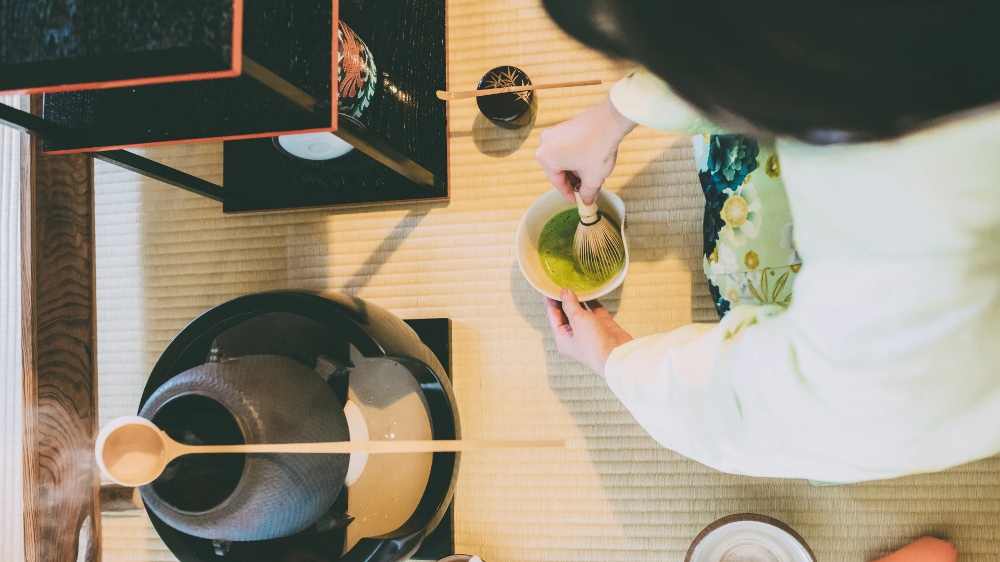
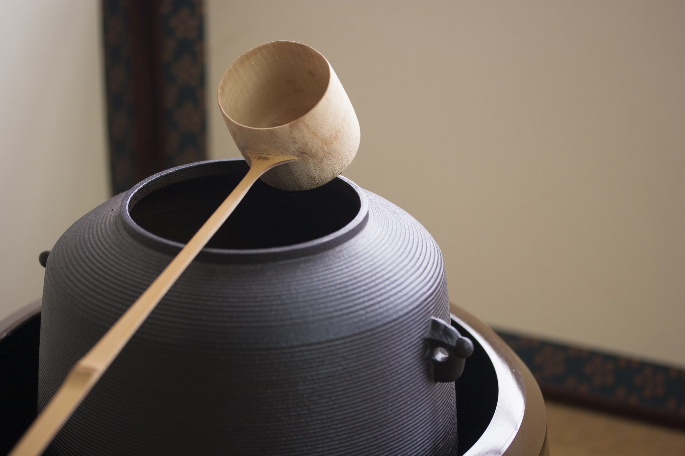

一期一會， 於茶湯中感受人生的美好
歡迎來到宗萱茶道學苑，這裡是由台灣首位日本裏千家茶道教授-鄭姵萱所創立，致力於推廣正統日本茶道文化。學苑提供專業的茶道學習環境，讓學員透過茶道及和服文化，體驗寧靜、專注與美學的結合。

歡迎來到宗萱茶道學苑，這裡是由台灣首位日本裏千家茶道教授-鄭姵萱所創立，致力於推廣正統日本茶道文化。學苑提供專業的茶道學習環境，讓學員透過茶道及和服文化，體驗寧靜、專注與美學的結合。

宗萱茶道學苑不僅是學習日本傳統技藝的場所，更是心靈沉澱與美學修養的空間，邀請您一同踏入茶道的世界，尋找內心的寧靜與平衡。
→ 新生招募中由日本裏千家認證教授親授，具31年資歷
因材施教，進度依個人調整
課程循序漸進，強調動作美感與精準訓練
座禮、立禮雙軌式學習，讓學習更輕鬆舒適
免費提供日本進口茶道具
在台即可申請日本裏千家許狀